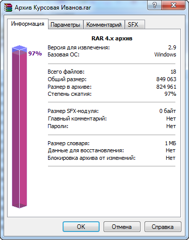
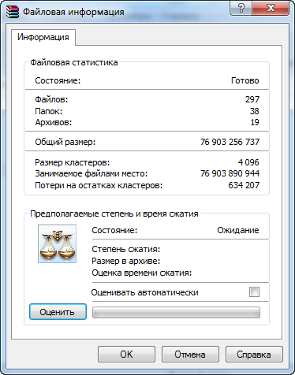

Winrar - без этого популярного, очень удобного и простого в использовании архиватора трудно представить себе повседневную работу с архивами. Поддерживает работу с такими форматами архивов как: RAR, ZIP, 7Z, ACE, ARJ, BZ2, CAB, GZ, JAR, LZH, TAR, UUE, Z, ISO обеспечивая максимальную скорость работы и степень сжатия данных. Среди богатого функционала программы WinRAR следует выделить способность к восстановлению поврежденных архивов, создание самораспаковывающихся и многотомных архивов, работу с запароленными и шифрованными архивами, а также возможность архивировать практически неограниченное количество файлов.
Главное окно програмы Winrar выглядит так:
Довольно простой интерфейс. Одно приятное достоинство архиватора Winrar это то, что крупно выделены кнопки для основных действий. Даже для начинающих предлагается мастер для пользователей, где коротко разъясняется как создавать или распаковать архив.
Рассмотрим окно добавления архива. Можно задать множество параметров такие как комментарии, сохранение времени файлов, резервные копии. Но самое основное во вкладке "Общие". Какой формат архива задать, по умолчанию предлагается всего 3 формата. Но можно и другие установить. Еще значимый параметр метод сжатия, где можно даже создать архив не сжимая файлы. Так уже установить пароль, при желании.
С извлечением всё просто, находим архивный файл и извлекаем. Нам лишь остается в окне задать место извлечения файлов. Так же можно использовать ряд дополнительных параметров, упрощающие извлечение, тем более можно сохранить выбранные настройки.
Весьма полезная функция - получение информации об архиве или же содержании папки(раздела)


Еще данный архиватор разрешает протестировать архив на наличие ошибок и к тому же их исправления
Поддерживаемые форматы: RAR,ZIP, BZ2, TAR, SFX (самораспаковывающийся архив), Z, CAB, ARJ, UUE, LZH, JAR, GZ, ISO (CD-имиджи), 7Z, ACE7Z.
Можно создавать специальный самораспаковывающийся архив SFX. Теперь совсем не обязательно для распаковки файла иметь программу архиватор. Файл SFX архива может распаковать себя сам.
Обеспечение сохранности и безопасности архива – вот еще одно преимущество архиватора WinRar. К этому пункту можно отнести такие возможности, как: блокировка архива, добавление электронной подписи к архиву, возможность указать пароль для архива, исправление архива
Так же WinRar позволяет просматривать состав архива, без его предварительной распаковки. Более того вы даже можете добавлять файлы в уже созданные архивы.
В WinRar есть ограничение по размеру архива - 8Гб. Этот недостаток (если это вообще можно назвать недостатком) легко перекрывается возможностью создавать архивы, разбитые на части. Вот, например, у вас есть две флешки по 8Гб. И есть один файл, размер которого – 9Гб. Понятно, что как бы вы не старались, унести файл с компьютера вам не удастся.
Вот именно в этом случае, вам может помочь WinRar, который с легкостью может разбить файл насколько угодно частей.
Так же к недостаткам программы WinRAR относится ее цена, а также небольшой срок бесплатной версии. Разработчики программы дают возможность тестирования в течение 40 дней, после этого будет появляться окно с уведомлением о не зарегистрированной версии. Однако можно игнорировать это уведомление и пользоваться архиватором WinRAR совершенно бесплатно.
При этом функционал программы не будет ограничен.
Подробную информацию, справку и инструкцию вы можете прочитать на официальном сайте WinRAR в России (Источник: http://www.win-rar.ru/)